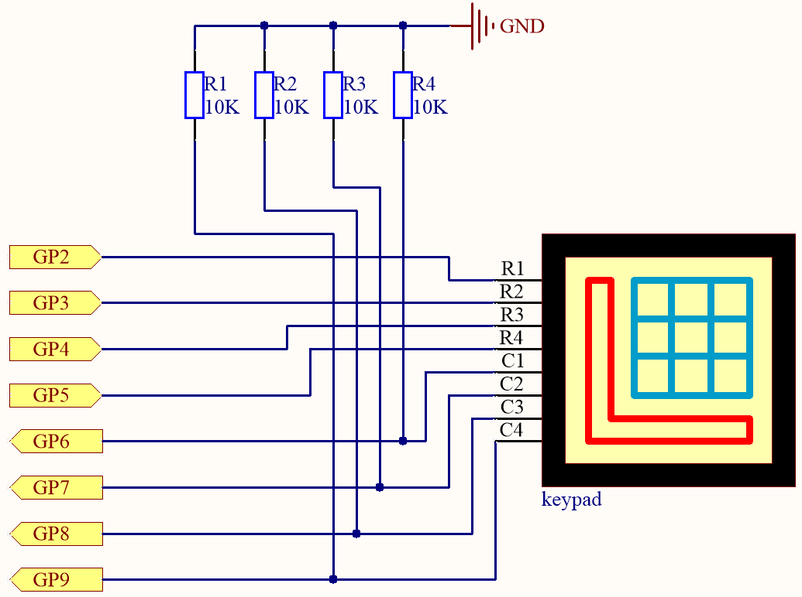
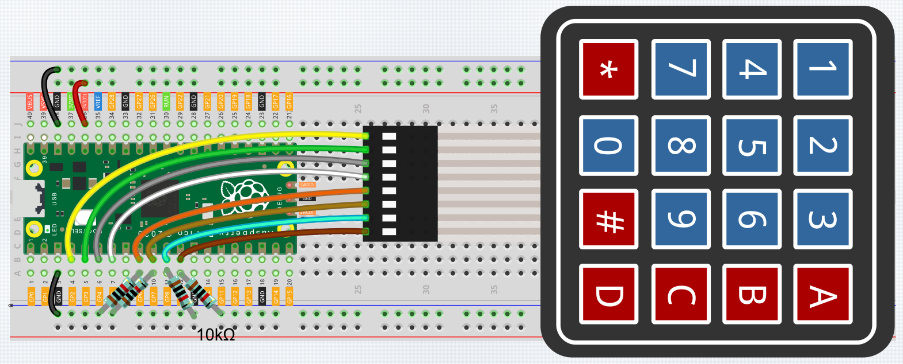

Note
Hello, welcome to the SunFounder Raspberry Pi & Arduino & ESP32 Enthusiasts Community on Facebook! Dive deeper into Raspberry Pi, Arduino, and ESP32 with fellow enthusiasts.
Why Join?
Expert Support: Solve post-sale issues and technical challenges with help from our community and team.
Learn & Share: Exchange tips and tutorials to enhance your skills.
Exclusive Previews: Get early access to new product announcements and sneak peeks.
Special Discounts: Enjoy exclusive discounts on our newest products.
Festive Promotions and Giveaways: Take part in giveaways and holiday promotions.
👉 Ready to explore and create with us? Click [here] and join today!
4.2 4x4 Keypad¶
The 4x4 keyboard, also known as the matrix keyboard, is a matrix of 16 keys excluded in a single panel.
The keypad can be found on devices that mainly require digital input, such as calculators, TV remote controls, push-button phones, vending machines, ATMs, combination locks, and digital door locks.
In this project, we will learn how to determine which key is pressed and get the related key value.
Schematic

4 pull-down resistors are connected to each of the columns of the matrix keyboard, so that G6 ~ G9 get a stable low level when the keys are not pressed.
The rows of the keyboard (G2 ~ G5) are programmed to go high; if one of G6 ~ G9 is read high, then we know which key is pressed.
For example, if G6 is read high, then numeric key 1 is pressed; this is because the control pins of numeric key 1 are G2 and G6, when numeric key 1 is pressed, G2 and G6 will be connected together and G6 is also high.
Wiring

To make the wiring easier, in the above diagram, the column row of the matrix keyboard and the 10K resistors are inserted into the holes where G6 ~ G9 are located at the same time.
Code
Note
Open the
4.2_4x4_keypad.pyfile under the path ofeuler-kit/micropythonor copy this code into Thonny, then click “Run Current Script” or simply press F5 to run it.Don’t forget to click on the “MicroPython (Raspberry Pi Pico)” interpreter in the bottom right corner.
For detailed tutorials, please refer to Open and Run Code Directly.
import machine
import time
characters = [["1","2","3","A"],["4","5","6","B"],["7","8","9","C"],["*","0","#","D"]]
pin = [2,3,4,5]
row = []
for i in range(4):
row.append(None)
row[i] = machine.Pin(pin[i], machine.Pin.OUT)
pin = [6,7,8,9]
col = []
for i in range(4):
col.append(None)
col[i] = machine.Pin(pin[i], machine.Pin.IN)
def readKey():
key = []
for i in range(4):
row[i].high()
for j in range(4):
if(col[j].value() == 1):
key.append(characters[i][j])
row[i].low()
if key == [] :
return None
else:
return key
last_key = None
while True:
current_key = readKey()
if current_key == last_key:
continue
last_key = current_key
if current_key != None:
print(current_key)
time.sleep(0.1)
After the program runs, the Shell will print out the keys you pressed on the Keypad.
How it works
import machine
import time
characters = [["1","2","3","A"],["4","5","6","B"],["7","8","9","C"],["*","0","#","D"]]
pin = [2,3,4,5]
row = []
for i in range(4):
row.append(None)
row[i] = machine.Pin(pin[i], machine.Pin.OUT)
pin = [6,7,8,9]
col = []
for i in range(4):
col.append(None)
col[i] = machine.Pin(pin[i], machine.Pin.IN)
Declare each key of the matrix keyboard to the array characters[] and define the pins on each row and column.
last_key = None
while True:
current_key = readKey()
if current_key == last_key:
continue
last_key = current_key
if current_key != None:
print(current_key)
time.sleep(0.1)
This is the part of the main function that reads and prints the button value.
The function readKey() will read the state of every button.
The statement if current_key != None and if current_key == last_key
is used to judge whether a key is pressed and the state of the pressed button.
(If you press '3' when you press '1', the judgement is tenable.)
Prints the value of the currently pressed key when the condition is tenable.
The statement last_key = current_key assigns the state of each judgment
to an array last_key to facilitate the next round of conditional judgment.
def readKey():
key = []
for i in range(4):
row[i].high()
for j in range(4):
if(col[j].value() == 1):
key.append(characters[i][j])
row[i].low()
if key == [] :
return None
else:
return key
This function assigns a high level to each row in turn, and when the button is pressed,
the column in which the key is located gets a high level.
After the two-layer loop is judged, the value of the button whose state is 1 is stored in the array key .
If you press the key '3':

row[0] is written in high level, and col[2] gets high level.
col[0], col[1], col[3] get low level.
There are four states:0, 0, 1, 0; and we write '3' into pressed_keys.
When row[1] , row[2] , row[3] are written into high level,
col[0] ~ col[4] get low level.
The loop stopped, there returns key = '3'.
If you press the buttons '1' and '3', there will return key = ['1','3'].